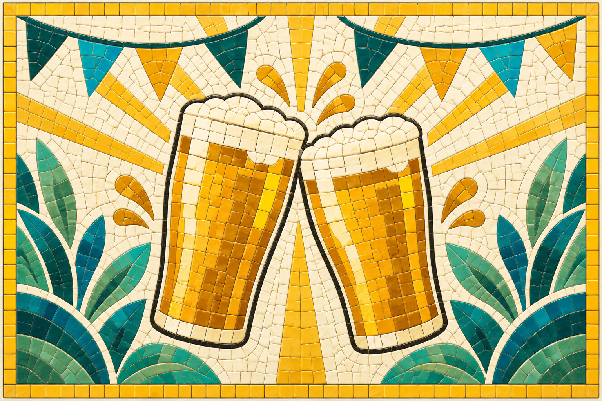
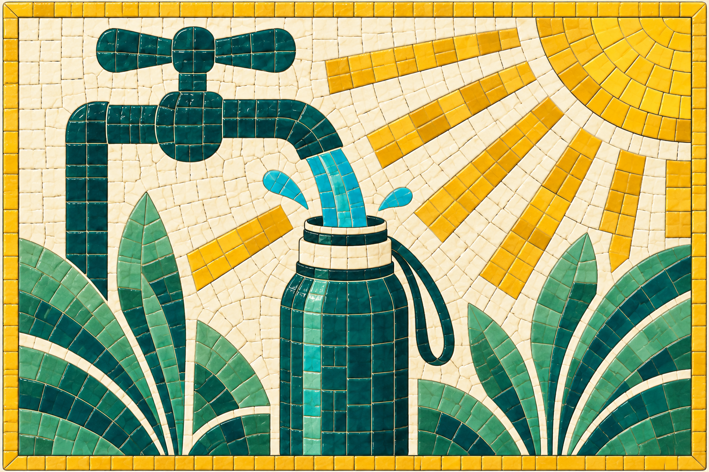
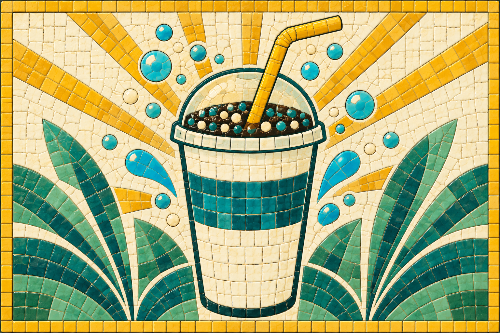
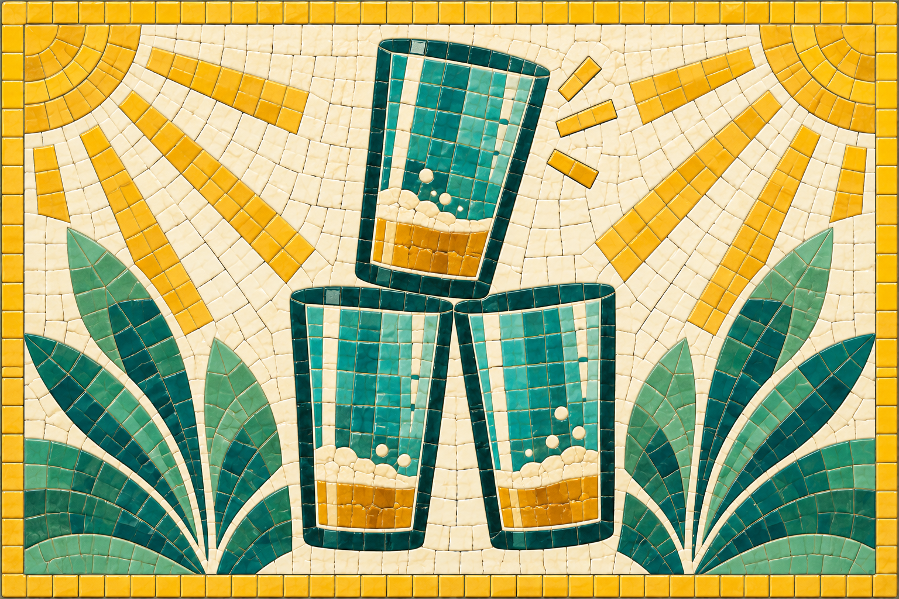
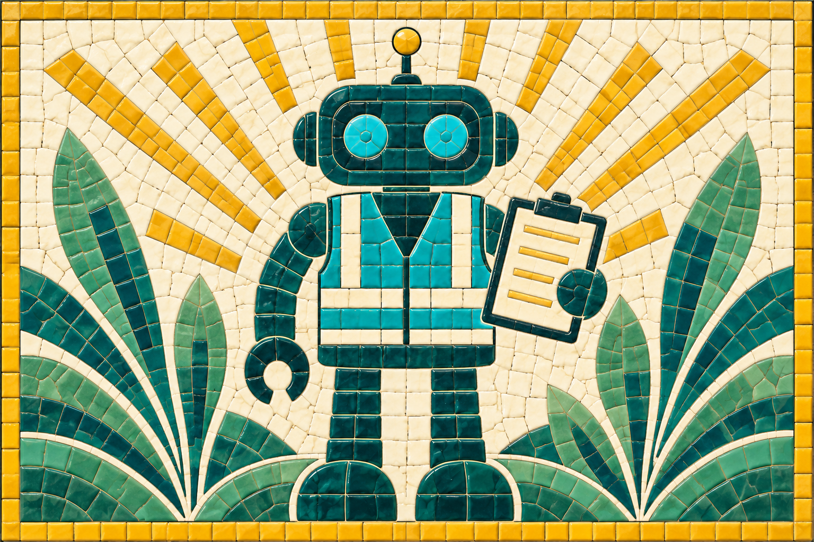

FESTIVAL PERK
Beer Festival

Beer costs 50% more. No teetotallers, and everyone drinks a little more.
Six new perks · exact current catalogue copy · artwork is text-free

Beer costs 50% more. No teetotallers, and everyone drinks a little more.

Guests chat in queues and gain satisfaction while they wait.

Guests get thirsty more slowly, but take longer to fill up at taps.

Guests prefer soft drinks to free water.

Guests buy much more beer, and get drunk more.

Staff never need to drink, eat, cool off or use the loo.
Beer costs 50% more. No teetotallers, and everyone drinks a little more.
Guests chat in queues and gain satisfaction while they wait.
Guests get thirsty more slowly, but take longer to fill up at taps.
Guests prefer soft drinks to free water.
Guests buy much more beer, and get drunk more.
Staff never need to drink, eat, cool off or use the loo.